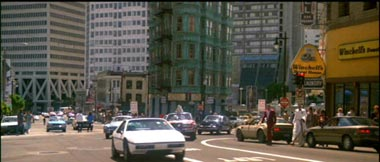
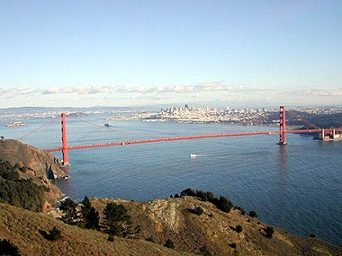
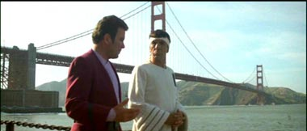
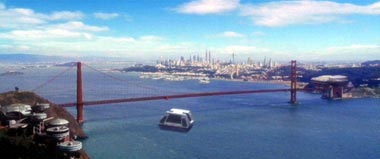
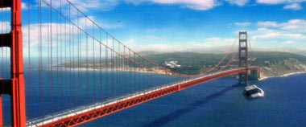

|

Clique aqui
para visitar o
Acervo de colunas

|

|
San Francisco, Terra
 Isto é, em parte, uma brincadeira,
porque nasci no bairro carioca de São Francisco Xavier, na Zona
Norte, entre o Méier (onde moram Alfredo e Chacal -- que fazem
uma feijoada sem igual!) e a minha querida Mangueira, ao lado
do Maracanã e da Vila Isabel (terra de Orestes, Martinho e Noel).
Aí, na rua de mesmo nome, está a universidade onde me formei
e trabalho. No centro do Rio, no Largo de São Francisco, fiz
pós-graduação. Uma das minhas avós também se chamava Francisca
e meu compositor preferido é Francisco Buarque. Olha que nem
sou católico, mas gosto muito de São Francisco de Assis. Se
tivesse nascido nos EUA, também gostaria de ser de São Francisco,
uma cidade que, de certa forma, é parecida com o Rio de Janeiro,
porque, apesar de seus problemas, possui características singulares.  Os espanhóis que fundaram o vilarejo original em nome da Coroa, mudaram o nome da localidade, dado pelos nativos: “Yerbabuena”. Talvez, porque pegasse mal, e alguém confundisse com alguma outra planta de cheiro e sabor envolvente, com efeito alucinógeno, não é mesmo?! A marcha para o Oeste, que dizimou vários índios, foi o motivo da colonização que fundou a cidade em 1850, às margens do Pacífico. Ao longo do tempo, São Francisco se tornou uma cidade portal entre o Oriente e o Ocidente, o que contribuiu para criar um espaço de grande variedade cultural, onde vários povos, de costumes e valores distintos se encontraram e se encontram até hoje. Esta é uma boa inspiração para o IDIC atribuído aos Vulcanos. Por causa da influência da cultura oriental, a cidade foi um dos berços do movimento “hippie” de contestação contracultural à civilização industrial de consumo de massa, que produz um modo de vida excessivamente consumista, destruidor do meio-ambiente e causador de profundas desigualdades sociais e guerras entre os países.Os jovens alternativos dos anos 60 contestaram essas coisas, com os lemas: “Faça amor, não faça a guerra” , “É proibido proibir”. Isto explica porque Spock é apresentado à doutora Gillian como um cara meio doidão, ex-aluno da universidade californiana de Berkeley.  San Francisco tem uma outra peculiaridade importante. É uma cidade que pode desaparecer do mapa por causa da falha geológica de Santo André, responsável por causar vários terremotos na região e temores à sua população, como foi o caso de 1906. Por esta razão, discordo de Harlam Elison, que pôs Nova York no episódio da Série Clássica “The City on the Edge on Forever”, como cenário para a visita dos tripulantes da Enterprise. No meu entender, este título tem mais a ver com San Francisco. Outro fator importante daria justamente à essa cidade tal título por causa da história do Mundo. Como já disse aqui no TB alguma vez, foi em San Francisco que redigiram a Carta das Nações Unidas nos anos 40, dando origem à ONU e à sua Declaração Universal dos Direitos do Homem, base de qualquer sociedade moderna que queira viver segundo os ideais da liberdade e da justiça. Tanto para nós mesmos, como para quaisquer outros que venhamos conhecer, esse documento é fundamental para entender quem somos, donde viemos e para onde poderemos ir como povo de um planeta historicamente acometido por guerras e outras catástrofes sociais. De todo modo, ele é um indicador de que a humanidade poderá vir a ser melhor do que tem sido, conforme demonstra a utopia da saga criada por Roddenberry. Só para lembrar, San Francisco foi há pouco uma das principais cidades dos EUA e do planeta que patrocinaram os protestos contra a invasão do Iraque, que temos visto no dia-a-dia como um enorme problema diplomático-militar para Bush e seus aliados.  San Francisco é também muito conhecida pois é onde os grupos homossexuais passaram a conquistar espaços importantes para as suas reivindicações, empunhando a bandeira arco-íris. Hoje, isso tem se tornado mais comum, inclusive no Brasil, com as paradas comemorativas do “Orgulho Gay”, onde expressam livremente a sua opção. Concordemos ou não com eles, somos levados a aceitar os seus direitos. De volta à ficção, uma das cenas mais chocantes em Jornada nas Estrelas, antecipando a realidade de 11 de setembro de 2001, foi a aparição da destruição da ponte Golden Gate, símbolo da cidade, por causa de um ataque inconseqüente dos Breen contra Federação, na guerra ao Dominium, como vimos em DS9. O coração da Frota Estelar foi atingido para causar pânico e terror. A imagem na tela tem poucos segundos mas, seu impacto no curso da situação é decisivo, a ponto de Sisko e seus comandados procurarem se mobilizar mais ainda para destruir os inimigos. A vida passada na bucólica San Francisco do século 19 é apresentada no episódio duplo "Time's Arrow", da Nova Geração, onde Picard e sua turma voltam no tempo perseguindo perigosos alienígenas e conhecem tanto Guinan como o famoso escritor Samuel Clemens (Mark Twain).  Em vários outros episódios da
Nova Geração, DS9, Voyager ou Enterprise
essa cidade é lugar de muitas cenas, principalmente passadas
na sede da Frota Estelar e da sua Academia. Nos filmes da
Série Clássica, apenas o quinto não retrata alguma ação
na cidade. Por aí podemos ver que não há outro lugar terrestre
com maiores referências no universo da saga do que San Francisco.
Várias naves, assim como a própria Enterprise original, foram
construídas no estaleiro que leva seu nome. Cláudio Silveira escreve regularmente sobre os filmes com exclusividade para o Trek Brasilis |
 Faz
pouquíssimo tempo, revi "Jornada nas Estrelas IV: A Volta
Para Casa" na companhia de alguns queridos amigos, depois
de um churrasco de domingo. Neste filme existe a cena em que
os tripulantes da Enterprise original chegam ao século 20, numa
ave-de-rapina Klingon. Tão logo eles visualizam o seu destino,
Sulu, feliz, profere as seguintes palavras “San Francisco. Eu
nasci lá!”. Daí, complemento: “Eu também!”
Faz
pouquíssimo tempo, revi "Jornada nas Estrelas IV: A Volta
Para Casa" na companhia de alguns queridos amigos, depois
de um churrasco de domingo. Neste filme existe a cena em que
os tripulantes da Enterprise original chegam ao século 20, numa
ave-de-rapina Klingon. Tão logo eles visualizam o seu destino,
Sulu, feliz, profere as seguintes palavras “San Francisco. Eu
nasci lá!”. Daí, complemento: “Eu também!”